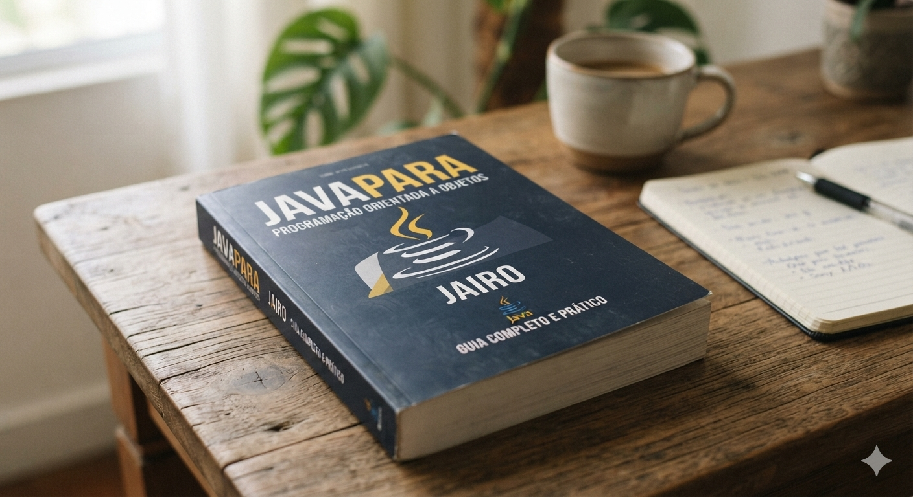

Projeto AgroTocantins
O projeto AgroTocantins é uma página desenvolvida para apresentar produtos agrícolas. O site utiliza HTML e CSS para organizar as informações, imagens, menu de navegação e diferentes seções da página.
Sistema de Cadastro de Livros

O Sistema de Cadastro de Livros é um projeto desenvolvido para praticar programação em Java. O sistema permite cadastrar informações como título e autor de livros, utilizando conceitos de programação orientada a objetos.